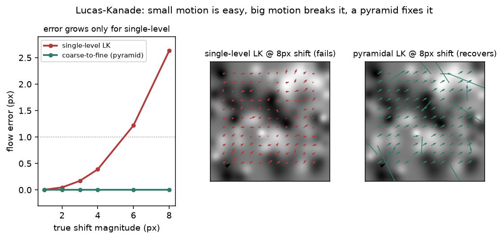

Lucas-Kanade optical flow (and why big motions break it)
The classic per-window flow solver recovers tiny motion exactly, fails on a large shift, and a coarse-to-fine pyramid rescues it.

Lucas-Kanade estimates optical flow by assuming brightness constancy and linearizing it: I(x+u) ≈ I(x) + Iₓu + Iᵧv. Over a window it solves the 2×2 normal equations [ΣIₓ², ΣIₓIᵧ; ΣIₓIᵧ, ΣIᵧ²][u;v] = −[ΣIₓIₜ; ΣIᵧIₜ] from the spatial gradients and the temporal difference Iₜ. That linearization only holds when the motion is a pixel or two — the whole method is built on a small-motion assumption.
we ran itWe shifted a synthetic textured frame by a known displacement and recovered it. For a 1 px shift single-level LK is essentially exact — 0.004 px error. But at a 8 px shift it recovers only ~4.6 px of the true 6.9 px and lands 2.63 px off, because the gradient at a pixel no longer predicts the intensity 8 px away. Running the identical estimator coarse-to-fine over a 4-level image pyramid drops the 8 px error to 0.001 px — a ~2600× improvement at large motion.
the failure it shows At a large displacement the brightness-constancy linearization is invalid — the aperture sees a different patch, so the 2×2 system solves for the wrong motion and the error climbs monotonically with shift size. A pyramid fixes it because a big shift looks small at the coarsest (downsampled) scale, so LK's assumption holds there and each finer level only refines.